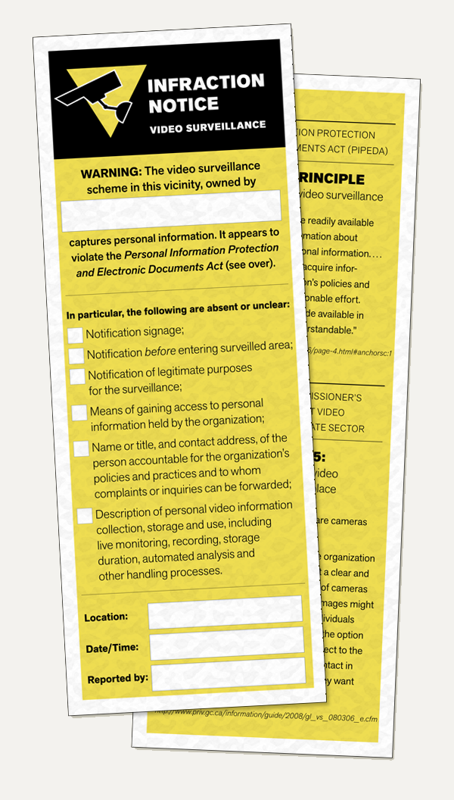

Video Surveillance Research Resources
In an ongoing exploration of the practices and implications of video surveillance in everyday life, we are critically investigating the legal requirements for accountability and privacy protection that video surveillance operators should comply with. Here are some resources from this project that individuals may find useful and interesting:
Video Surveillance Accountability Toolkit

This toolkit is designed to help you exercise your rights in relation to video surveillance and to share this information with others. These materials are provisional and we welcome your feedback on how they may be improved.
- Use this Request for Personal Video Information form to ask an organization for video surveillance images and recordings they have captured of you, as well as information about how your personal information is used or disclosed.
- Print this video surveillance Infraction Notice and use it to inform others about video surveillance installations that appear to violate PIPEDA.
- Take a camera spotting tour with the Camera Watcher's Guide to the Toronto Eaton Centre.
Reports for the Office of the Privacy Commissioner of Canada
Clement, A., Ferenbok, J., Dehghan, R., Kaminker, L., Kanev, S, and Valdman, S. (2011). 'Smart' Private Eyes in Public Places? Video Surveillance Analytics, New Private Threats and Protective Alternatives.
- Full Report (with Appendices A and B) (13 MB)
- Report only (900 KB)
- Appendix A: Fieldwork Report on Video Surveillance and Signage in the Greater Toronto Area (6 MB)
- Appendix B: Report on Video Analytics in the Greater Toronto Area (7 MB)
Ferenbok, J., McPhail, B., Dehghan, R., Cybulski, A., and Clement, A. (2013). Who is Watching You? And Why? What do Canadians know about their video/visual privacy?
Ferenbok, J., McPhail, B., and Cybulski, A. (2013). Report on Video Surveillance Regulation and Rights: Canadians' Information Needs.
Photos
Events
(Video) Eyes on the Street A 2011 Jane's Walk
On May 8, 2011 Prof. Andrew Clement and Dr. Joseph Ferenbok led a Jane’s Walk that set its sights on video surveillance (aka CCTV) in downtown Toronto. They offered a reprise of this Walk on Sunday May 15 at 11AM. The walk starts from under the surveillance camera, right under the Canadian flag, at the main entrance to City Hall in Nathan Phillips Square. It takes in the Eaton Centre and surrounding area and ends about 2 hours later at Yonge Dundas Square.
Here are some resources for these walks.